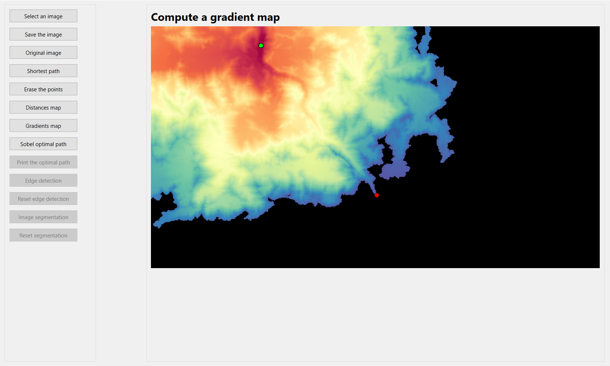
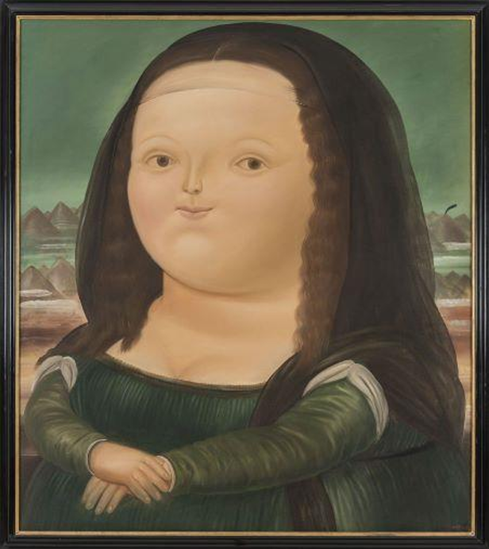
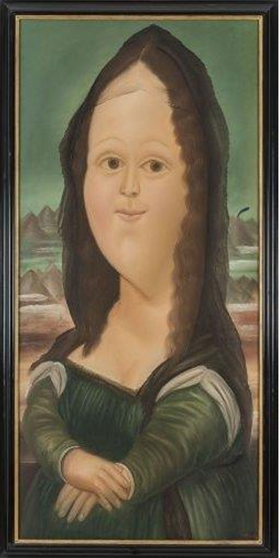
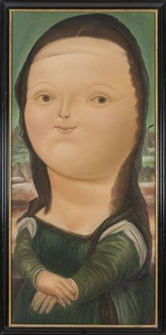
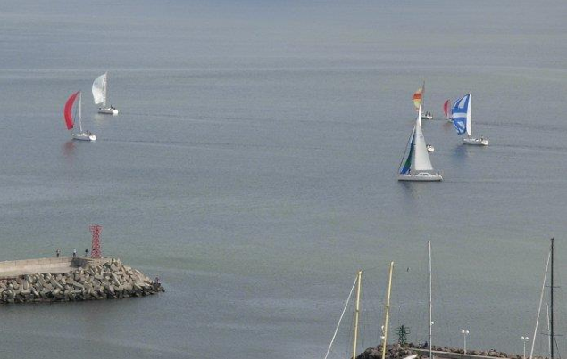
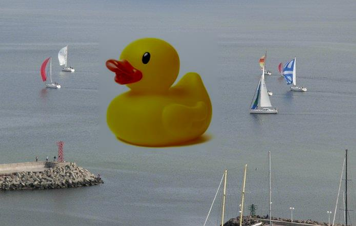
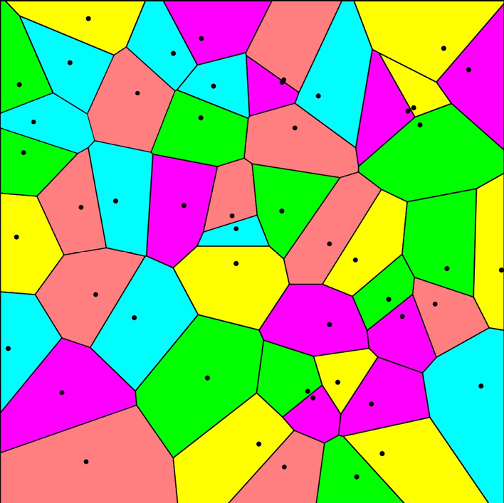

A Fast Backup Solution for Postal Tour Planning with Mobile App Compatibility
Internship : University of Fribourg – DS&OR Group, in collaboration with Swiss Post,
Supervisors Nour Elhouda TELLACHE, Bernard RIES, Roberto BALDACCI
July - December 2026
Ongoing project
This project explores the implementation of a fallback solution for Swiss Post's routing system. As a backup solution, the program should run on a mobile phone,
offline and with a limited time and resources. The routing model includes various constraints (maximum weight, maximum volume, pick-up-delivery, break scheduling)
and a lexicographic objective cost that prioritises time-window violations over operational costs. This project includes work streams such as data processing
and analysis, literature review and synthesis, complex modelling, algorithm implementation, constraint optimisation, result visualisation and solution communication.Game party observed and played by a trained model
Reinforcement learning: From Atari Games to Operations Research
Course project : Second-year annual project,
Supervisor Pierre-Cyril AUBIN,
February - June 2026
Structured Reinforcement Learning for Combinatorial Decision-Making introduced
a new pipeline to solve industrial operational problems. This pipeline consists of a statistical model, which captures main features
of the environment, and an optimisation layer, which produces a feasible solution based on information gathered by the statistical model.
This architecture is trained with a reinforcement learning scheme and this project compares it with established
reinforcement learning baselines, especially Deep Q-Network described by Playing Atari with Deep Reinforcement
Learning. To achieve this, we implemented models following the paper's methodology and trained these models on Atari games,
a classic Reinforcement Learning benchmark.

User interface showing a distance map
Fast Marching
Course project : Software design and development
Teachers Julien CARDINAL, Xavier CLERC
September 2025 - January 2026
Fast marching extends Dijkstra's algorithm to compute the shortest path, while simultaneously distinguishing the paths on an image.
The objective of the project is to implement a user-friendly software for Fast Marching
and its practical applications, such as edge detection and image segmentation, in Python.
A key engineering challenge was implementing a status bar to inform the user of the computation progression,
which required parallel computation and information transmission between different parts of the programme.



Mona Lisa, Botero
Seam Carving for Image processing
Course project : First-year annual project
Supervisor Pascal MONASSE
January - June 2025
Seam Carving is a content-aware image resizing technique, without deforming or cropping salient features. It removes continuous seams with low energy.
energy function quantifies local contrast and entropy.
We implemented and tested different data structures in C++. In particular, a data structure inspired by Knuth's Dancing Links demonstrated
significant improvement in time complexity, at the cost of higher memory usage.
This project also explores the applications of Seam carving, such as content enhancement and object removal. These applications are derived from
energy field manipulation or successive application of seam removal.
Based on S.Avidan and A.
Shamir, Seam Carving for Content-Aware Image Resizing,ACM Transactions on Graphics
(TOG),vol.26,no.3,2007.


Original image and inserted object
Poisson Editor
Course project : Programming Workshop
Teacher Pascal MONASSE
February - June 2025
The Poisson Editor aims to reconstruct image regions, based exclusively on the gradient in this part, by solving partial differential equations.
In order to solve the resulting linear systems, the Fast Fourier Transform and the Gauss-Seidel methods have been implemented and compared in C++.
Sparse matrix representations significantly reduced computation time. In addition, various practical applications,
like texture transfer, illumination adjustment and color blending have been developed.
Based on P.Pérez, M.Gangnet, A.Blake,
Poisson image editing,ACM Transactions on Graphics (TOG), vol. 22, no. 3,
2003

A Voronoi diagram
Voronoi diagram
TIPE (supervised personal initiative project)
June 2023 - May 2024
I implemented Green-Sibson and Fortune algorithms for creating Voronoi diagrams in OCaml. The time and space complexities
of each algorithm have been analysed and benchmarked. Fortune's sweepline algorithm is the most efficient algorithm for
computing a Voronoi diagram. The Green-Sibson's algorithm benefits from its incremental aspect, especially if the diagram is constructed piece-wise.
I have developed various heuristics and game-playing strategies in Voronoi games.
![[github icon]](./images/github.png) /leocheng789
/leocheng789